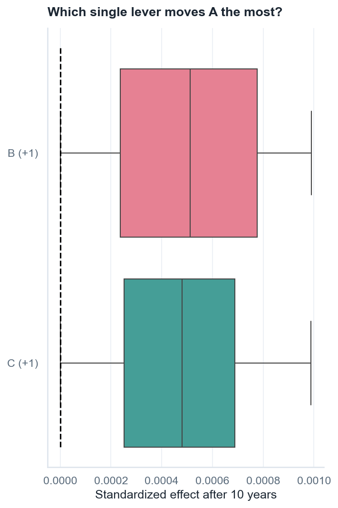
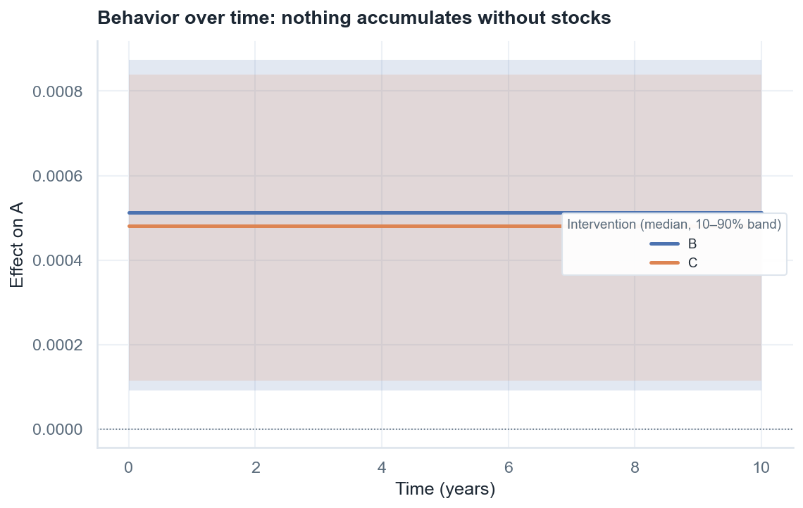
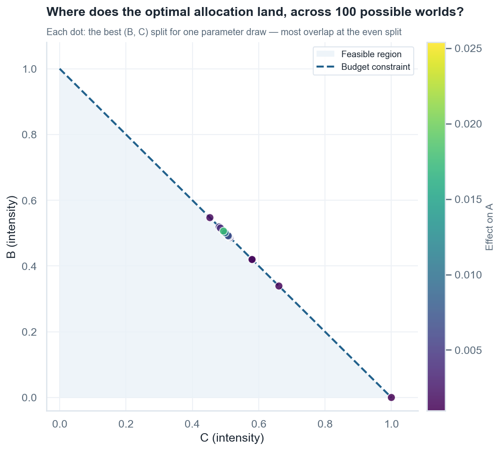

1Draw the causal loop diagram
Everything starts with a picture of how you believe the system works. Sketch it on paper or a
whiteboard: one bubble per variable, one arrow per causal influence, and a polarity
on each arrow — + if the cause pushes the effect in the same direction, −
if it pushes the opposite way.
For anything bigger than a few bubbles, draw the diagram in Kumu — a free tool built for maps like this, often used in participatory sessions with stakeholders. Kumu can export the diagram as an Excel workbook, and that export is exactly the file format SIP reads. You never need to write code to define a model: the Excel file is the model.
2Decide what you want from the model
Before annotating anything, answer two questions explicitly — they anchor every later choice:
Which variables do you want to see vary? These are your variables of interest (VOIs) — the outcomes the whole analysis is about. Here it is A. Be deliberate: a diagram drawn in a group session contains many interesting variables, but the analysis sharpens enormously once you commit to the one or two whose behavior actually answers your question.
Which variables could you act on? These are your intervention variables — the levers. Here, B and C. Include everything plausibly actionable (a later step ranks them; you don't need to pre-judge), and note for each whether acting means pushing it up or down.
3Choose the timeframe and the time unit
Two time choices, both anchored to the VOIs you just picked:
The time unit is the timescale at which you want to be able to see the VOIs vary. If meaningful change in A is something you'd notice year over year, the time unit is years; if it plays out week by week, weeks. Every rate in the model will be expressed per this unit.
The timeframe (t_end) is how far ahead the question reaches — the
horizon over which interventions get to prove themselves. Here: 10 years.
4Classify every variable: stock, auxiliary, or constant
With the timeframe and time unit fixed, the classification that beginners find hardest becomes a simple two-threshold rule. For each variable, ask how fast it changes:
Varies more slowly than the timeframe? → constant. Over the whole
simulated horizon it won't move appreciably; treat it as a fixed (but intervenable) condition.
Adjusts to its drivers faster than the time unit? → auxiliary. By
the time you look again, it has already settled to whatever its drivers dictate — "(almost)
instantly" means within one time unit.
In between? → stock. It accumulates and has memory: it builds up
or drains over multiple time units and would stay put if its inputs stopped.
Applying the rule here (time unit = years, timeframe = 10 years):
- A responds to B and C faster than a year → auxiliary.
- B and C are dials set from outside that don't drift on their own within 10 years → constants.
Note the consequence: this model has no stocks, so it has no memory — we will literally see that in the graphs of step 7. The same rule applied to the insulation model (where trust and adoption accumulate over years) yields 31 stocks — and rich dynamics.
5Fill the spreadsheet
The workbook has one sheet for the bubbles and one for the arrows. With steps 2–4 decided, every
cell is now determined. This is the entire Minimal.xlsx:
Elements — one row per variable:
| Label | Type | Tags | Description | Equation |
|---|---|---|---|---|
| A | auxiliary | 0 | VOI | #1*B*C+0.01*#2*B+0.01*#3*C |
| B | constant | 1 | ||
| C | constant | 1 |
Type— the step-4 classification (case-insensitive).Description— writeVOIon each variable of interest from step 2.Tags— a nonzero value marks an intervention variable from step 2; the number is the intervention strength and its sign the direction (-1for a lever you would push down).Equation— optional, step 6.
Connections — one row per arrow:
| From | Type | To |
|---|---|---|
| B | + | A |
| C | + | A |
An optional Interactions sheet (From1, From2, Type, To) can declare
pairwise interaction terms; here we express the interaction through the equation instead.
The remaining knobs are five lines of Python — the step-3 choices plus how thoroughly to sample the uncertainty:
from sip_systemsinsightpipeline import Extract, SDM
s = Extract("Minimal.xlsx").extract_settings()
s.seed = 12345 # reproducibility
s.N = 200 # how many parameter samples (more = smoother, slower)
s.t_end = 10 # timeframe (step 3)
s.time_unit = "years" # time unit (step 3)
s.parameter_value_aux = 0.1 # max sampled rate for auxiliaries / equation parameters
s.parameter_value_stocks = 0.1 # max sampled rate for stocks
sdm = SDM(s)[0, bound] (with the
arrow's polarity sign; from [−bound, bound] when polarity is unknown). A bound of
0.1 per year means the fastest sampled process reacts on a ~10-year timescale (1/0.1) — consistent
with our classification of slow stocks. If stocks should change noticeably within the timeframe,
keep bound × t_end from being ≪ 1. There is no time step to choose: the integrator
(LSODA) adapts its own internal steps; sdm.t_eval = np.linspace(0, s.t_end, 41) only
sets where the solution is recorded for plotting.
6Advanced: annotate the formulas (the Equation column)
value = Σ coeffᵢ · sourceᵢ; for a
stock, the same sum is its rate of change (so influences accumulate). This is the right
default for purely qualitative diagrams.Default intervention entry: if no
$ is specified, an intervention
shifts a constant's value, a stock's initial condition, and is added to the
result of an auxiliary's (custom or default) equation.
When you know more than the default — a saturation, a threshold, a synergy — write it in the
Equation column:
| Notation | Meaning |
|---|---|
B, C | variable names, exactly as in the model |
#1, #2, … | free parameters, each sampled uniformly from [0, parameter_value_aux] |
$ | where the intervention enters; if omitted, the default above applies |
np.exp, np.tanh, np.sqrt, sigmoid, … | numpy functions for nonlinear shapes |
The equation in this model is:
#1*B*C + 0.01*#2*B + 0.01*#3*CRead it as a modeling statement: A is driven mostly by B and C acting together (the product), while each alone has only a weak direct effect.
# parameter is sampled from the same range, [0, parameter_value_aux]
(here [0, 0.1]). To give different terms different ranges, multiply the parameter by a
constant: 0.01*#2 is effectively a parameter sampled from [0, 0.001] —
a hundred times weaker than #1. This is how the equation above encodes "the synergy
dominates, direct effects are small" without fixing any exact value. The same trick widens ranges
(10*#1) or flips signs (-#1 for a coefficient known to be negative).
SIP validates each equation against the diagram and warns when an equation uses a variable that has no incoming arrow, or silently ignores an arrow that exists — catching typos before they become wrong conclusions.
7Simulate, and read each graph carefully
df_sol_per_sample, param_samples = sdm.run_simulations()
effects = sdm.get_intervention_effects()
voi = s.variable_of_interest[0]
from sip_systemsinsightpipeline.plots import plot_simulated_intervention_ranking
plot_simulated_intervention_ranking(s, effects[voi], voi)7.1 — The intervention ranking

7.2 — Behavior over time

7.3 — Sensitivity analysis: which assumptions matter?
SA_results, df_SA = sdm.run_SA(voi, None, cut_off_SA_importance=0.1)+-------+------+--------------------+------------------+----------------+ | Link | Rho | 95% CI (bootstrap) | Mean Rho per Int | SD Rho per Int | +-------+------+--------------------+------------------+----------------+ | p2->A | 0.52 | [0.45, 0.63] | 0.5 | 0.5 | | p3->A | 0.47 | [0.39, 0.56] | 0.5 | 0.5 | +-------+------+--------------------+------------------+----------------+
p2, p3 — the #2 and
#3 equation parameters). Rho is the rank correlation between that
parameter's sampled value and the intervention effect: parameters with large |Rho| are the
assumptions your conclusions hinge on — prime candidates for measurement or literature review.
The per-intervention columns add nuance: a mean of 0.5 with SD 0.5 means the
parameter matters enormously for one intervention and not at all for the other (here, #2
only matters when intervening on B). And notice who is missing: p1,
the synergy coefficient, falls below the cutoff — because single interventions move only one of
B or C, the product B*C stays near zero and #1 never
gets to act. Hold that thought for step 8.
8Optimize a budget — and read the allocation plots
Ranking tests one lever at a time. Real decisions split a budget across levers. The optimizer
works in expenditure space: each intervention gets an expenditure
yi = costi × intensityi, with y ≥ 0 and
Σy ≤ budget, and multi-start SLSQP finds the split that maximizes (or minimizes) the
outcome. Besides the best split it also reports near-optimal alternatives — allocations
within 5% of the best effect:
from sip_systemsinsightpipeline import SDMOptimizer
params = sdm.sample_model_parameters() # one draw of the uncertain world
costs = [1.0] * len(s.intervention_variables)
optimizer = SDMOptimizer(sdm)
result = optimizer.optimize_intervention_intensities(
params=params, costs=costs, variable_of_interest=voi,
budget=1.0, maximize=True, n_starts=8, seed=1)Success: True Best effect size: 0.02094 Near-optimal allocations found: 5 B: intensity 0.501 C: intensity 0.499
B*C term. "Near-optimal
allocations found" counts distinct budget splits within 5% of the best — alternatives worth
knowing about when some lever is politically or practically harder to pull.
8.1 — The allocation scatter: optimization under uncertainty
One parameter draw is one possible world. Re-optimizing for many draws, and plotting the best allocation of each draw in the plane of the two interventions that receive the most budget, shows how robust the strategy is:
opt_df = optimizer.optimize_across_parameter_samples(
costs=costs, variable_of_interest=voi, maximize=True,
n_parameter_samples=100, n_starts=4, seed=1)
best_per_draw = opt_df[opt_df.equilibrium_idx == 0] # near-optimal alternates have idx 1, 2, ...
9Feedback loops: Loops That Matter
This model has no feedback loops — the diagram is acyclic, which is precisely
why its behavior is so tame. SIP's LoopsThatMatter analysis scores every loop's
contribution to the dynamics over time, and it becomes interesting the moment your diagram feeds
back on itself. See the loops section of the insulation
twin, where 21 real loops compete for dominance.
10Checklist
| Step | Where | |
|---|---|---|
| 1 | Sketch variables, arrows, polarities; redraw in Kumu; export to Excel | paper → Kumu |
| 2 | Decide the variables of interest and the intervention variables | reflection |
| 3 | Choose the time unit (speed at which VOIs should visibly vary) and the timeframe | reflection |
| 4 | Classify: slower than timeframe → constant; faster than time unit → auxiliary; in between → stock | rule of thumb |
| 5 | Fill Elements / Connections; set Type, VOI, Tags; set timeframe and sampling bounds in 5 lines of Python | Excel + Python |
| 6 | Optional: custom equations (#, $, range-scaling trick); know the defaults | Excel |
| 7 | Simulate; read ranking, time courses, sensitivity analysis | Python |
| 8 | Optimize the budget; read the allocation scatter | Python |
| 9 | Check which feedback loops drive the behavior | Python |